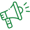

Firm Health Ghana Foundation is committed to promoting holistic wellness through advocacy, education, and community engagement. Our mission is to empower individuals and communities to prioritize their physical, mental, and emotional well-being.
Our Core Values
Firm Health Ghana Foundation (FHGF) operates in alignment with these guiding principles, shaping our commitment to community health and well-being.
Wellness
We believe in the importance of comprehensive wellness that encompasses physical, mental, emotional, and social well-being.
Empowerment
We empower individuals to take control of their health by providing them with the information and tools they need to make informed decisions.
Equity
We advocate for equitable access to wellness resources and services, ensuring that underserved and marginalized communities are not left behind.
Collaboration
We collaborate with partners, organizations, and communities to create a collective impact on wellness advocacy.

Education
We provide educational programs and resources to raise awareness about the importance of wellness and self-care.
Flexibility and Innovation
"Embrace flexibility and innovation in wellness advocacy, adapting to changing needs for effective outcomes.